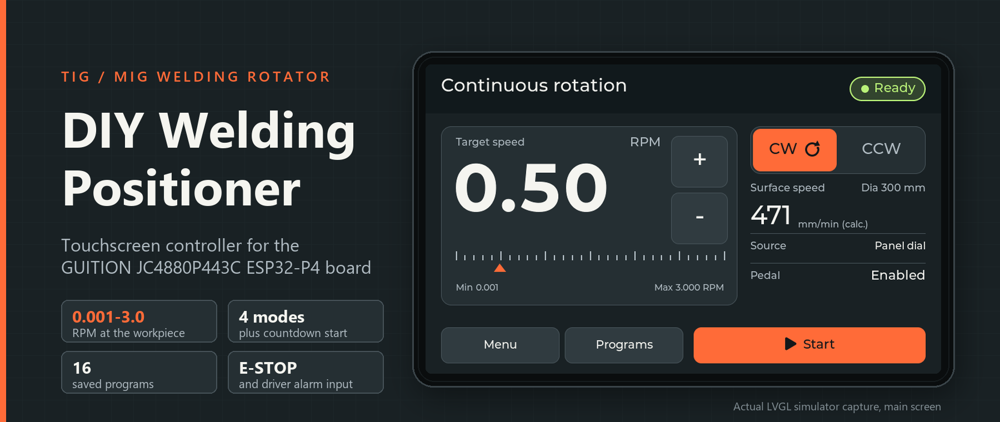
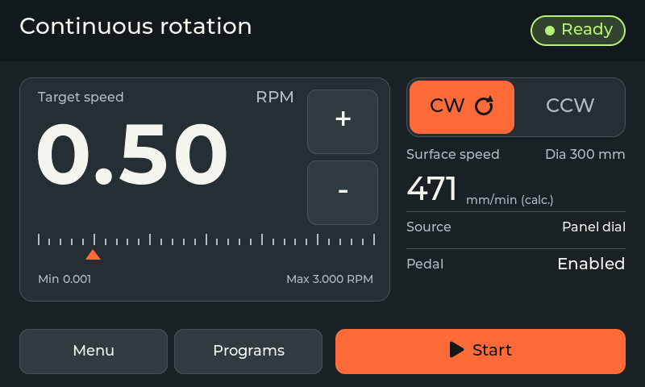
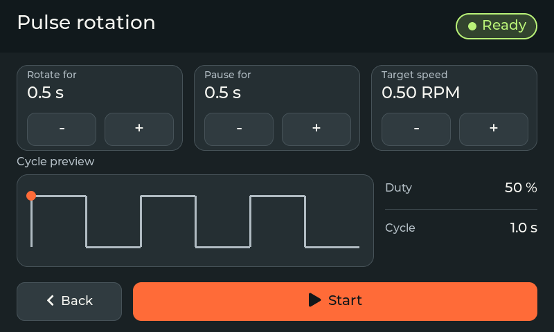
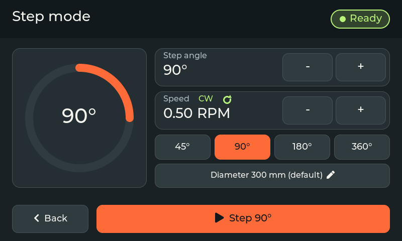
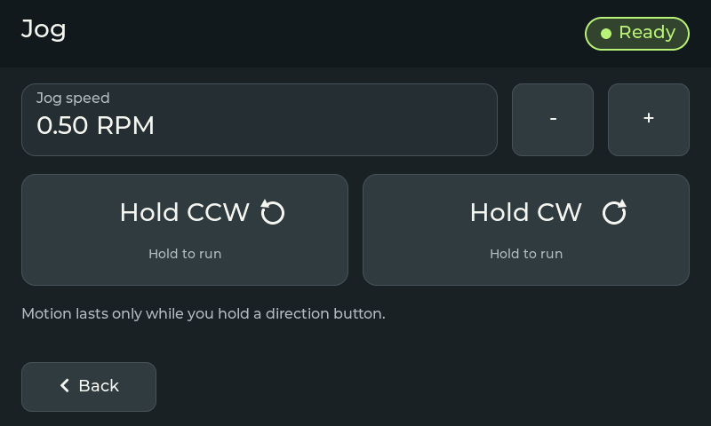
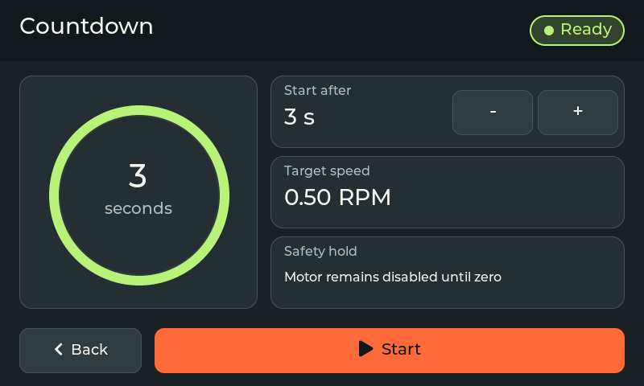
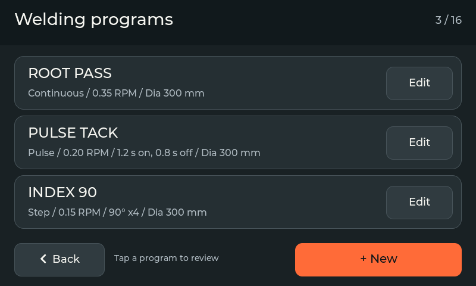
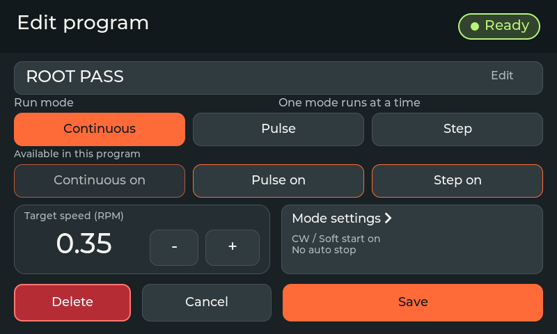
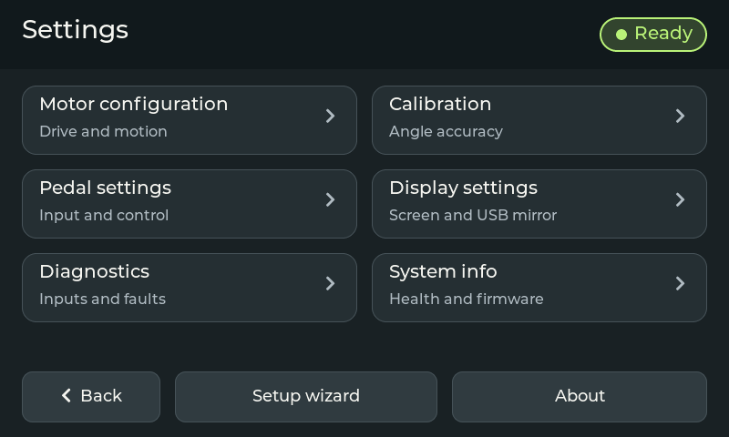
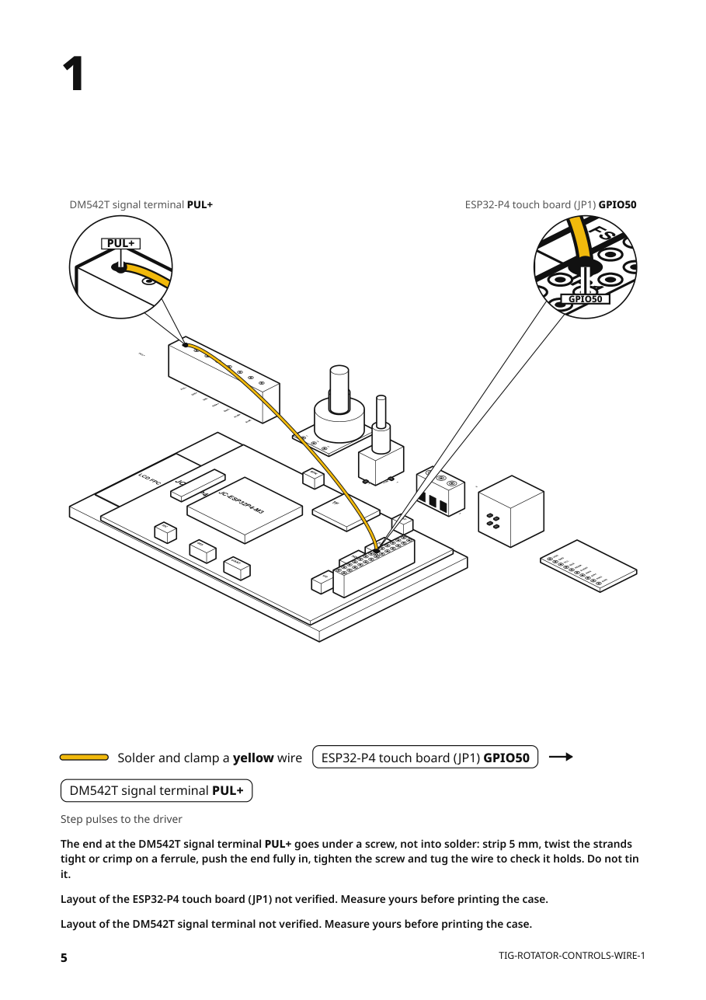

Slow, steady rotation. Set it, then weld.
A touchscreen controller for a DIY welding rotator, built on the GUITION JC4880P443C ESP32-P4 board. Four modes, 16 saved programs, and firmware you can flash and change yourself.
One screen for speed, direction and mode.
It drives a NEMA 23 stepper through a DM542T or other PUL/DIR driver and an NMRV030 worm gearbox. Speed is set as the surface speed of your part, worked out from roller and workpiece diameter, gear ratio and microsteps.

The screen shows the effective minimum and maximum for your roller, diameter, gear ratio and calibration. Motor configuration can lower the maximum.
Big numbers, few buttons. Readable with a helmet on.
Actual LVGL simulator captures at 800 × 480. Each release includes a Windows simulator that runs the screens without any hardware.








Three steps at the bench.
Pick mode and speed
Choose Continuous, Jog, Pulse or Step, then set the speed with the panel pot, the pedal pot or the buttons beside the value.
Start and weld
Press Start on the screen, or use the optional foot pedal: releasing the pedal switch stops the motion. Pedal starts are blocked during setup.
Stop and reset
The E-STOP input and the driver alarm make the firmware stop pulses and inhibit the driver ENA input, then show what to do next. A reset never starts rotation. This does not disconnect motor power.
Every wire, one step at a time. Generated from one file.
A flat-pack style guide for the low-voltage control wiring: the touch board's JP1 header, the speed pot, the direction switch, the pedal with its ADS1115, the E-STOP input and the DM542T signal terminal. The firmware pin header comes from the same file, so GPIO numbers cannot drift apart.
Motor power, the stepper, gearbox and the metal enclosure are outside this package. JP1 and connector positions on the board are estimated from the maker's photo: check pin 1 on the silkscreen before you solder.

Built for the shop. Open to the last line.
Four modes
Continuous runs at your speed. Jog moves while you hold. Pulse rotates and pauses on a cycle for tack welds. Step turns 45, 90, 180 or 360 degrees, or an angle you type in. An optional 1 to 10 second countdown can run first.
Speed at the workpiece
The firmware limits workpiece speed per diameter by a 200 kHz step rate and 1500 motor RPM by default. Programs above the limit are blocked at start.
Calibrate against a measurement
There is no encoder. A guided calibration moves 360 degrees, you enter what you measured, and a second move must land within 0.5 degrees before it saves.
16 named programs
Save speed, direction, diameter and mode. The editor refuses a speed the motor cannot run at that diameter.
Watches itself, with limits
E-STOP input, driver alarm, its own tasks, the touch panel and the panel pot (rail jumps only) can latch a named fault. Not detected: an open E-STOP wire, a floating pot wiper, jumps on the analog pedal.
HF start needs the right enclosure
Controller, driver and motor PSU go in one grounded metal enclosure bonded to earth, with motor wiring kept apart from signal wiring. The owner reports TIG HF works on their machine built that way, on v2.3.0.
Download a release, or build it yourself.
Release, debug and mirror images come with SHA-256 checksums and FLASHING.md. Application images go at 0x10000, never 0x0.
# Windows: run from PowerShell
git clone https://github.com/catorendal-a11y/DIY-Welding-Positioner-ESP32-P4
cd DIY-Welding-Positioner-ESP32-P4
pio run -e esp32p4-release -t upload --upload-port COM5
# from the latest release welding-positioner-v2.4.1-simulator-windows-x64.zip # extract, then open Start Simulator.cmd
Before you build one.
Is the E-STOP a safety circuit?
No. It acts through the GPIO34 input, the firmware and the driver ENA input. It does not disconnect motor power, an open wire can read as healthy, and the physical stop time has not been measured. With the controller unpowered, software cannot set the driver's state, so external hardware must make it safe. The input expects a conditioned signal, HIGH when healthy and LOW on fault. Test pressed, released, broken wire and power loss before you rely on it.
Can I use it with HF-start TIG?
Only with the controller, driver and motor PSU in one grounded metal enclosure bonded to protective earth. Without it HF start can reset the controller, freeze touch or create false inputs. The owner reports TIG HF works on one machine built that way, on v2.3.0. Repeat your HF checks after changing firmware, wiring or the enclosure.
What has actually been tested?
The owner reported v2.3.0 working on the assembled machine on 2026-11-04, including TIG HF, and v2.3.1 on the same machine. v2.4.0 was flashed and its screens checked, but motion was not re-tested. v2.4.1 has not been run on the machine: bench-test it before welding. Stop time and calibration accuracy have not been measured. Each commit runs the native test suite, simulator self-tests and three firmware builds.
What do I need?
A GUITION JC4880P443C board, a NEMA 23 stepper (about 3 Nm), a DM542T or other PUL/DIR driver, an NMRV030 worm gearbox with a 72/40 spur stage, a 24 to 36 V DC supply of at least 5 A, a 10k speed pot, a direction switch, an E-STOP interface and a grounded metal enclosure. Optional: a foot pedal with an ADS1115. A 5 V buck converter powers the board when you do not use USB-C.
Will it drive my driver directly from 3.3 V?
Only if your driver's input specification allows it. ESP32 GPIO is 3.3 V logic and not 5 V tolerant. Use a suitable signal interface when the driver needs 5 V, and never connect motor supply voltage to the opto inputs or the board.
Does it have an encoder?
No. It is single axis without closed-loop feedback, so speed and position are calculated from kinematics, calibration and step timing. That is why the calibration step matters.
Licence and contributing?
MIT. Dependencies and fonts keep their own notices. Issues and pull requests are welcome; share photos, your driver and motor settings and the firmware version in an issue.
Status. v2.4.1 fixes 22 audit findings and has not yet been run on the machine. Every build runs automated tests, but stop time has not been measured and the E-STOP is not independent of the controller. Treat a new build as a prototype: bench-test motion, E-STOP and alarm handling before you weld.